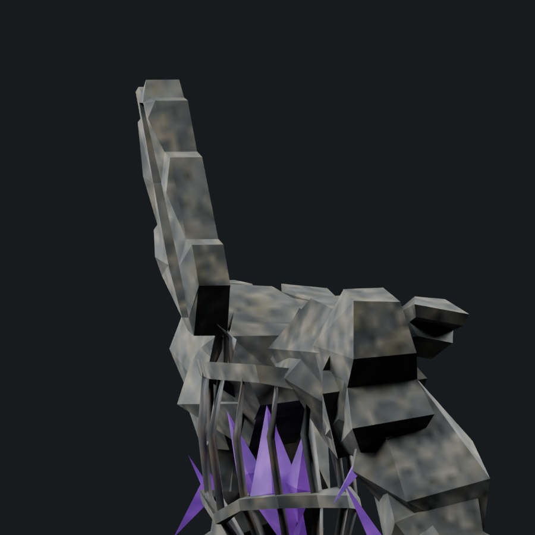
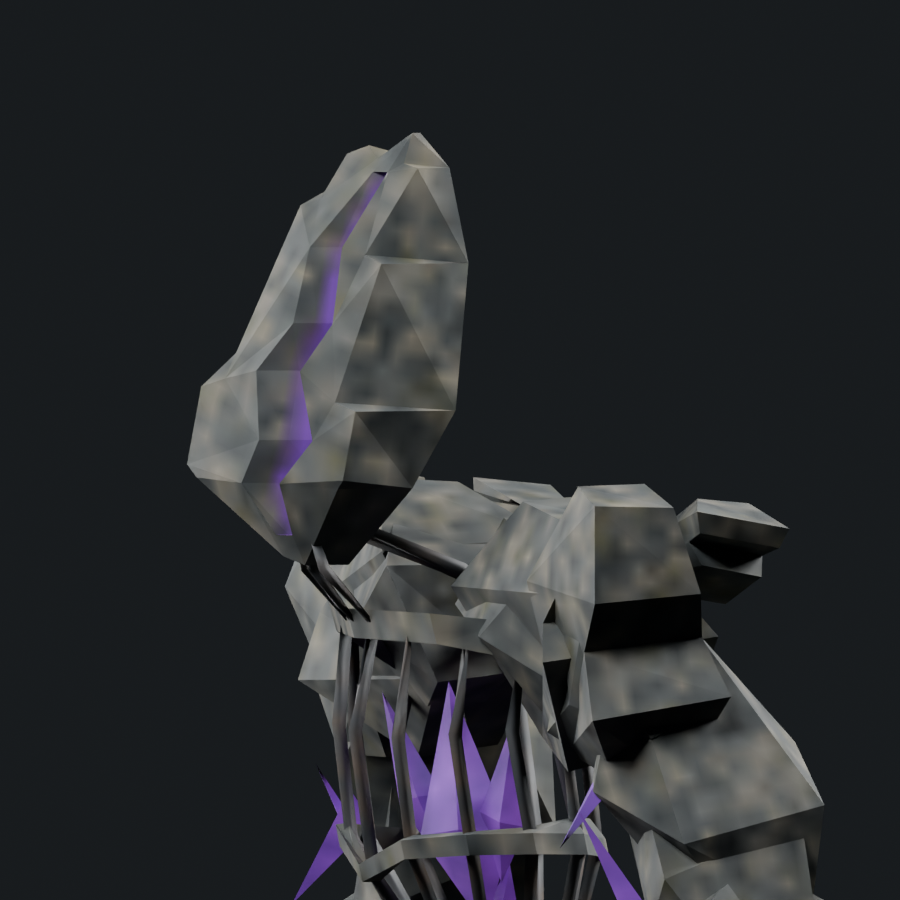
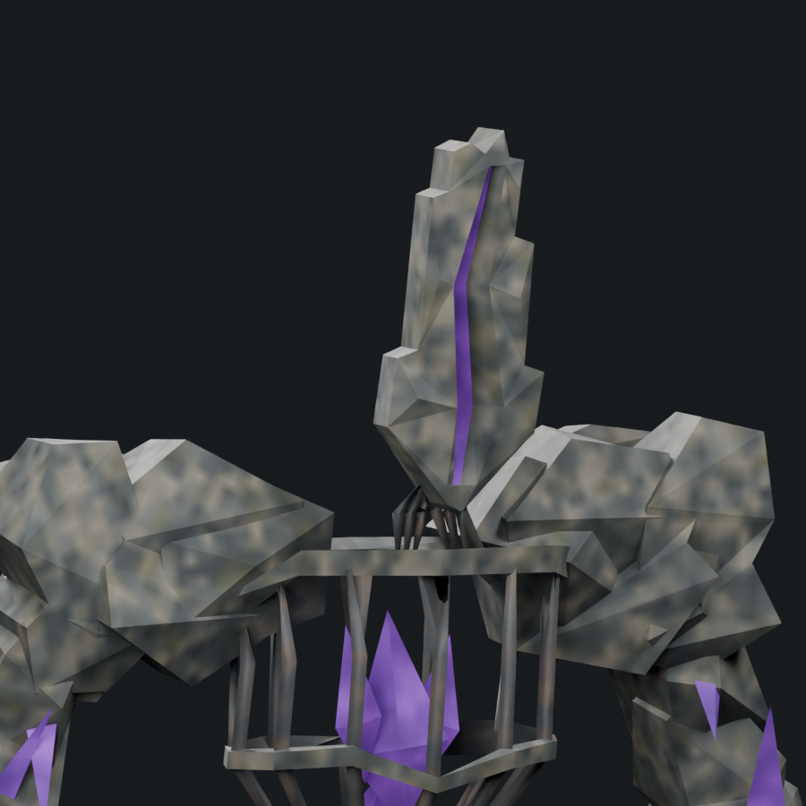
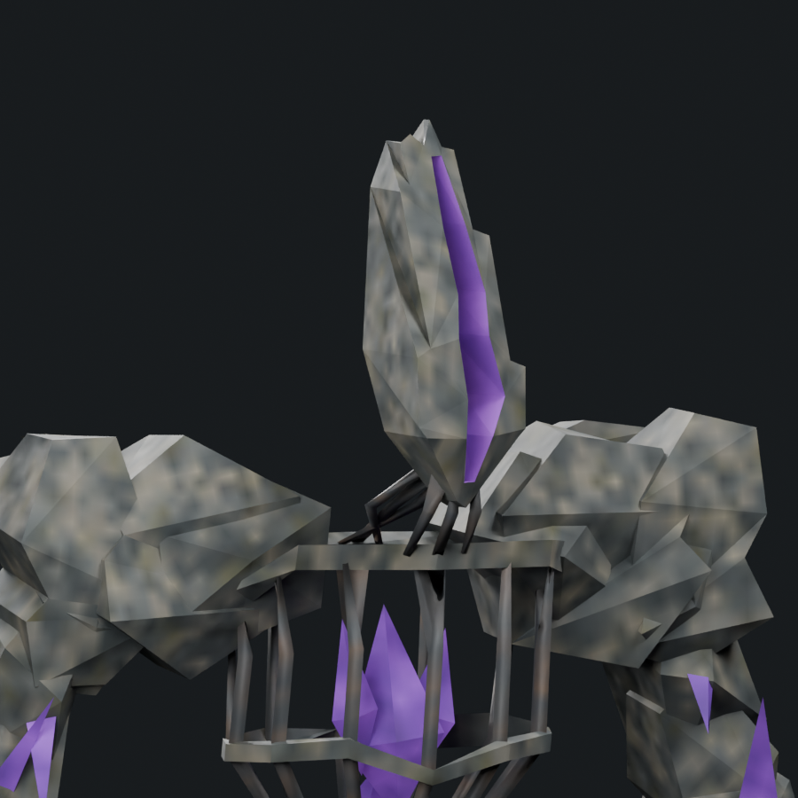

Approved r13 front outline preserved. New volume, backward rake, specifically left-receding purple lining and six bars arranged across the neck depth. 1,800 triangles. Candidate awaiting art review.
Changes and limits · Measured preservation and depth · Rolling findings · Portable skinned model
Before/after use exact matching cameras and lighting. The painted concept has different perspective; the true profile is shown separately.




Only the actual head, six neck bars and collar are displayed; no review geometry added.
Head surface detail and the other audit regions remain unfinished. Native runtime acceptance is pending; adequate boss tally remains 1/6.